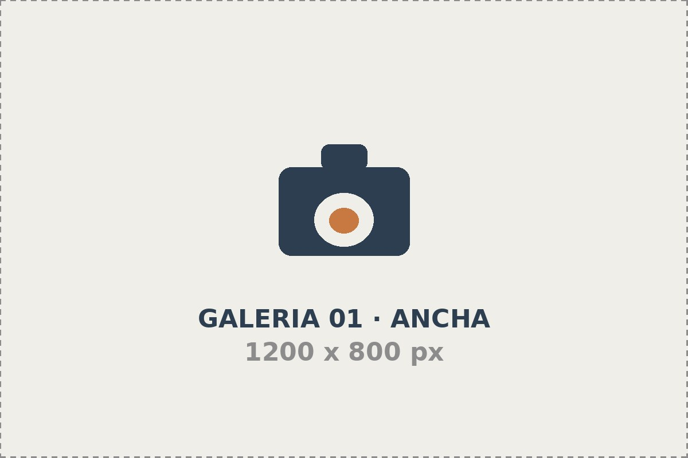
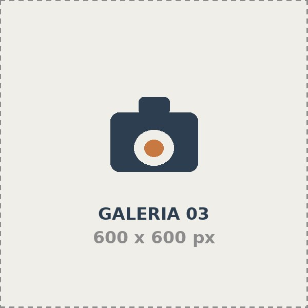

Galeria
Una seleccion que hemos fotografiado entre 2024 y 20226
480
Sesiones realizadas
12
Años de trayectoria
36
Marcas Acompañadas
98%
Volveria a contratarnos
Explorar por categoria
Cada enlace lleva a su seccion dentro de esta misma pagina
Todo el trabajo





Retrato
sesiones individuales ,familiares y de perfil profesional